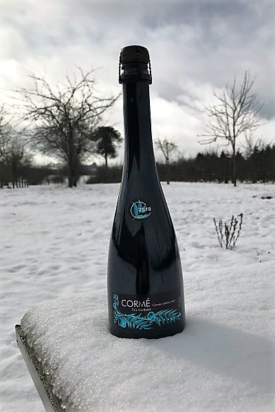

Cormé
The corm, also known as the service tree fruit, is a small seed fruit, yellowish and red in color but can also be grey according to the specific variety.
Origin
Cormé is a 15th century beverage mainly present in the former province of Maine. It was considered a fruit wine, that is to say a fermented beverage made with any plant that could produce a fermentation. The Cormé was the first fermented fruit wine produced from corms. These fruits come from the tree named Cormier also known as Sorbus Domestica. The name Cormier came from the Gallic "Curmi" which designated a fermented beverage, such as beer. It is the only wild tree that produces consumable fruits in large quantities.
The Cormier is a hard and resistant wood with a long life which is why it was also used to make Carpenter's tools.
Historical
 Cormé was produced from the 15th century until the 1950’s. It served primarily as a family beverage in the province of Maine, in Mayenne in particular. Fruit wines such as cider, perry or cormé were consumed undiluted or in most cases cut by water, especially among the poorest populations. It was considered less harmful to health than wine made from grapes. The corms were used alone but also mixed with other fruits such as apples or pears. They also added corme juice to drinks like cider or wine and used cormes to produce an “eau de vie”.
Cormé was produced from the 15th century until the 1950’s. It served primarily as a family beverage in the province of Maine, in Mayenne in particular. Fruit wines such as cider, perry or cormé were consumed undiluted or in most cases cut by water, especially among the poorest populations. It was considered less harmful to health than wine made from grapes. The corms were used alone but also mixed with other fruits such as apples or pears. They also added corme juice to drinks like cider or wine and used cormes to produce an “eau de vie”.
Varieties (Domaine Eric Bordelet)
8 Varieties of cormes of different sizes and shapes.
Why?
 The idea is to restore an old drink to the taste of today by valuing its origin from the former province of Maine.
Alchemy
Picked at a potential alcohol of 9% but stopped at 7% to result in 30g/L residual sugar